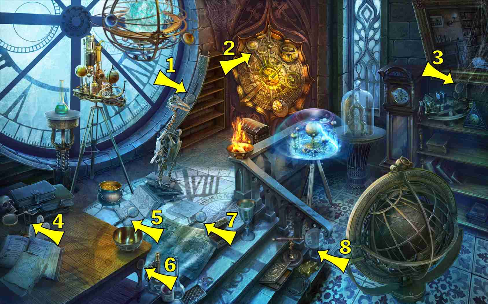
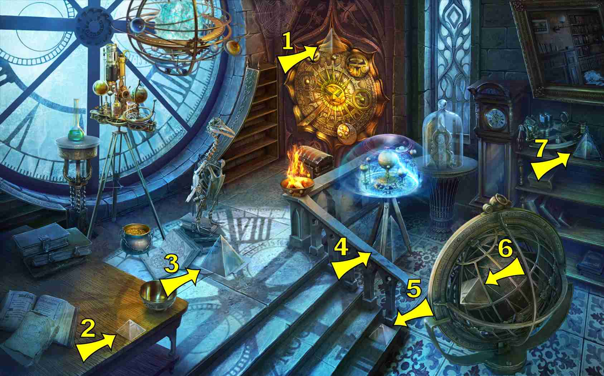

6 items:
Chemical formula
- Stone column left of back window
- Glass on clock between VI and VII
- Curved clock stonework at VII
- Carved into table top, near edge
- Middle step, near edge
- Upper left corner in clock
7 items:
- On top left of small astrolabe, in front of the big window clock

6 items:
- Curve of clock window frame
- Base of the steps
- On a book on the landing
- Lower left corner of mirror frame
- Table leg corner where mag glass sometimes is
- Bottom frame of astrolabe, lower right


5 items:
- 3rd step near end
- On table top
- Top of big globe lower right of scene
- On smaller astrolabe on grandfather clock
- Second shelf, right side of scene
7 items:
- Sagittarius - On book lower left corner